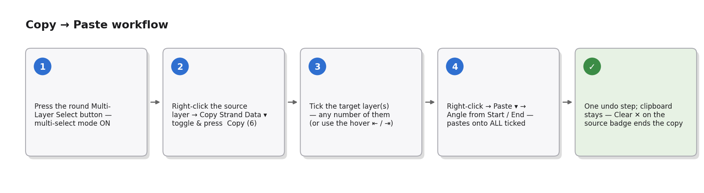
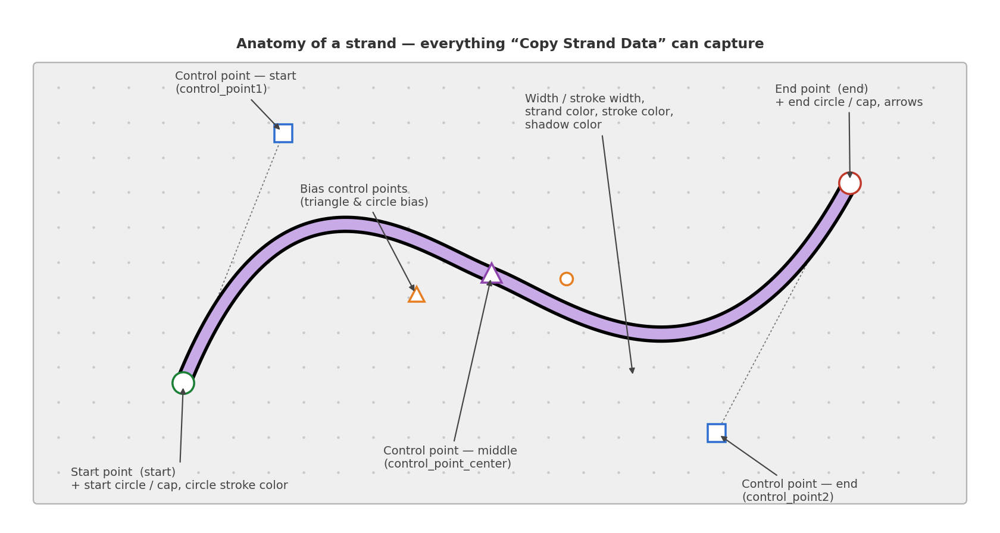
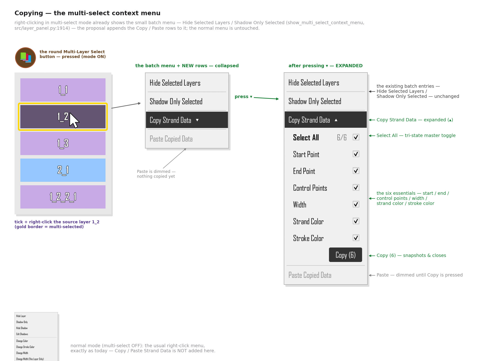
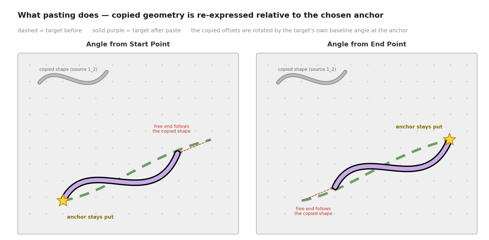
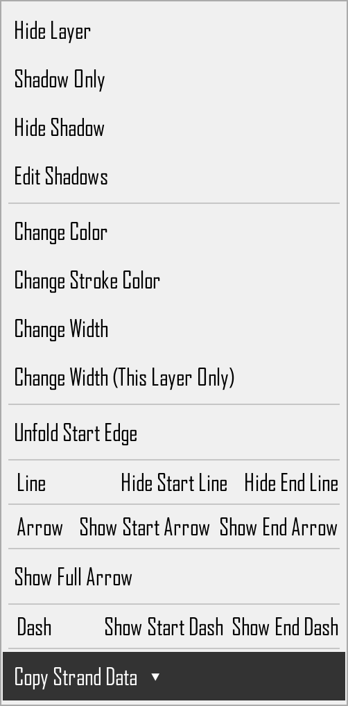
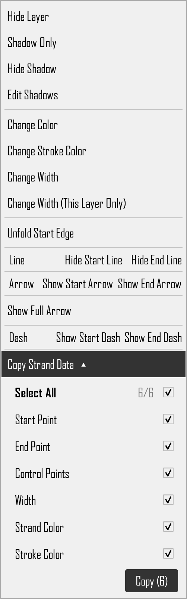
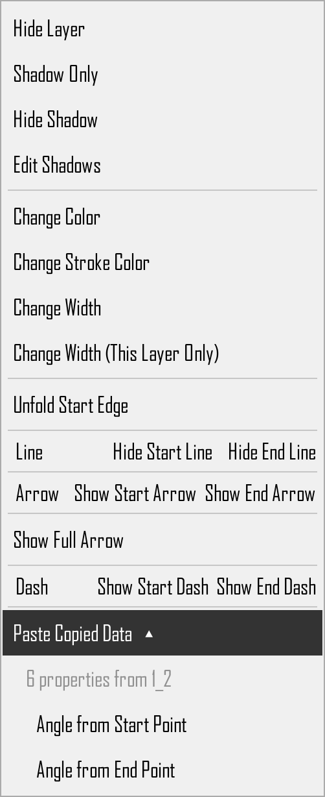
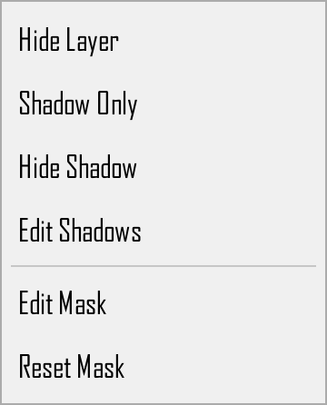
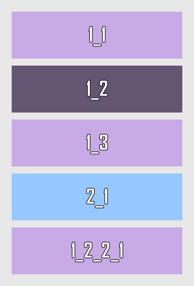

Copy / Paste Strand Data
Product concept for OpenStrand Studio — a selective copy dropdown on the numbered layer button, and an angle-aware paste onto other layers via the layer panel.
The UI in the mockups is the app's real UI: tools/render_ui_qt.py runs the
actual NumberedLayerButton.show_context_menu code path offscreen with real
Strand / MaskedStrand objects and screenshots the menus it builds;
the proposed additions are built from the app's own HoverLabel class, exact menu
stylesheet, and the same embedded-widget pattern as the existing Arrow Customization block.
The raw UI captures live in mockups/qt/ (gallery at the bottom of this page).
Summary
A new Copy Strand Data option on the numbered layer button lets the user pick exactly which pieces of a strand to copy — kept deliberately to the six essentials: Start Point, End Point, Control Points (curve shape incl. bias), Width (incl. stroke width), Strand Color, and Stroke Color. The menu shows only a single Copy Strand Data ▾ row; pressing its dropdown arrow expands the panel of toggles (with a Select All master toggle) inline in the menu, in the same style as the existing Arrow Customization panel. Until the dropdown is pressed, none of the detail toggles are visible.
After copying, right-clicking another layer's numbered button in the layer panel (a regular strand or an attached strand — never a masked layer) shows that layer's normal context menu plus a new Paste Copied Data ▾ dropdown row. Expanding it reveals two placement choices — clicking one pastes immediately and closes the menu, and the clipboard survives for further pastes until the next Copy:
- Angle from Start Point — the copied geometry is re-anchored at the target's start point and rotated to the target's own baseline angle measured from its start.
- Angle from End Point — same, but anchored and angle-matched at the target's end point.
Non-geometric properties (colors, widths…) are simply applied as-is. While a copy is active, the layer panel itself can also show it — a badge on the source layer, quick ⇤ / ⇥ paste controls on eligible layers, and an explicit way to finish the copy; three candidate designs are compared in the indicators section.

Copy Strand Data ▾ on the source layer's button, then right-click target layers in the layer panel and paste with an anchor choice; the clipboard survives for repeated pastes.1.What can be copied
The panel deliberately stays short — just the six essentials, the things you reach
for when making one strand look like another. Every toggle maps to real strand attributes
(src/strand.py), and the set mirrors what the app already saves to JSON
(serialize_strand, src/save_load_manager.py:109) and what group duplication
already copies in memory (GroupPanel.copy_strand_properties, src/group_layers.py:3217).

| Toggle (panel label) | Strand attributes | Geometric? |
|---|---|---|
| Start Point | start | yes |
| End Point | end | yes |
| Control Points | control_point1, control_point_center (+ control_point_center_locked, triangle_has_moved), control_point2 (+ control_point2_shown, control_point2_activated), bias_control.triangle_bias, .circle_bias, .triangle_position, .circle_position | points yes, bias values no |
| Width | width, stroke_width | no |
| Strand Color | color | no |
| Stroke Color | stroke_color | no |
- Angle needs no toggle — a strand's baseline angle is defined by its endpoints, and pasting re-applies it through the anchor choice (section 4). Copying Start/End carries the angle with it.
- Control Points is one toggle covering all three control points and the bias controls — users think "the curve's shape", not five separate handles.
- All six toggles are on by default; the last-used state is remembered for the session.
- Everything else the app can serialize (shadow color, circle stroke colors, arrow settings, line & dash visibility, end caps, curve tuning) is deliberately not in the v1 panel — see section 7 for a possible "Advanced…" expansion.
The "Geometric?" column matters at paste time: only geometric values go through the anchor + rotation mapping (section 4); everything else is assigned directly.
2.Copying — the layer-number-button menu
Right-click the numbered layer button of the source strand. The menu for a regular
strand today contains, in order (all rows are HoverLabel widget-actions or embedded
label+button rows, 8pt font, 35px min row height, light theme #F0F0F0/#000000 with
inverted hover, dark theme mirrored — src/numbered_layer_button.py:243-286):
Hide Layer/Show LayerShadow Only· 3.Hide Shadow· 4.Edit ShadowsChange Color·Change Stroke Color·Change Width·Change Width (This Layer Only)Unfold Start Edge/Fold Over Start Edge(circle-stroke transparency toggle)Linerow (Hide/Show Start Line,Hide/Show End Line)Arrowrow (Show/Hide Start Arrow,Show/Hide End Arrow)Show Full Arrow/Hide Full Arrow(+ the Arrow Customization block when the full arrow is on)Dashrow (Show/Hide Start Dash,Show/Hide End Dash)- situational:
Circlerow,Close the Knot, closing-knot stroke entries
The proposal appends one separator + a single Copy Strand Data ▾ row. The row is
collapsed by default — the toggle panel is not visible when the menu opens. Pressing
the row's dropdown arrow expands the panel inline (embedded exactly like the Arrow
Customization block); pressing it again collapses it back to the single row. The mockup
shows all three states: the real menu as the app builds it today (left), the proposed
menu as it opens — collapsed, with only the Copy Strand Data ▾ row added
(middle), and the same menu after pressing the ▾ dropdown — expanded (right):

Copy Strand Data ▾ row (middle) → the toggle panel after pressing the ▾ dropdown (right).Behavior details
- Collapsed by default: opening the context menu shows only the
Copy Strand Data ▾row (aHoverLabelrow like every other entry, with a dropdown arrow on its trailing side). Clicking the row toggles the panel open/closed — the same expand-inside-the-menu behavior the Arrow Customization block uses whenShow Full Arrowis enabled. The menu stays open while expanding/collapsing. - The expanded/collapsed state resets to collapsed every time the menu is opened.
- Select All is a tri-state master toggle, exactly like the global-toggle rows already
used in the Group Shadow editor (
src/group_shadow_editor_dialog.py:283-298): clicking it while mixed selects everything; clicking again clears everything; it shows the indeterminate mark while only some toggles are on. - The panel is embedded in the context menu the same way the existing Arrow
Customization block is (a
QWidgetActionholding aQWidgetwith aQVBoxLayoutof label-left / control-right rows, panel background#F0F0F0light /#333333dark,border-radius: 5px—src/numbered_layer_button.py:617-769), so it inherits the app's menu look-and-feel, theming, and Hebrew RTL handling for free. - The Copy (N) button sits at the bottom of the expanded panel; it snapshots the selected values into an in-memory clipboard and closes the menu. The button is disabled when nothing is selected.
- Copy is offered on regular strands and attached strands. For masked layers the
entry is not added in v1 (same
isinstance(strand, MaskedStrand)branch that already gives masks their reduced menu — they have no control points and their geometry is derived from the two masked layers,src/masked_strand.py).
Clipboard model
- One application-level clipboard slot (e.g.
canvas.strand_clipboard), overwritten by the next copy. It stores plain data — freshQPointF/QColorcopies plus floats and bools, never live object references (the same rulecopy_strand_propertiesfollows; Qt objects must not bedeepcopy-ed). - The snapshot also records the source's
layer_name(for the "Clipboard: N properties from 1_2" hint) and the source's start→end baseline angles needed for pasting. - Because it is a snapshot, deleting or editing the source strand afterwards does not affect what will be pasted. The clipboard lives for the session; persisting it into the saved project file is a possible follow-up (section 7).
3.Pasting — right-click the target layer in the layer panel
With something in the clipboard, right-clicking another layer's numbered button in the layer panel shows that layer's normal context menu — every existing entry unchanged — plus one new row appended at the bottom: Paste Copied Data ▾.
Like the copy row, it is a dropdown: collapsed when the menu opens, and pressing it expands inline to show the dimmed clipboard hint ("6 properties from 1_2") and the two anchor choices — Angle from Start Point / Angle from End Point. Clicking a choice applies the paste immediately and closes the menu:

Paste Copied Data ▾ row; pressing ▾ reveals the clipboard hint and the two anchor choices, and clicking one pastes and closes the menu. Masked layers keep their reduced menu, without a paste entry.- The paste menu rows use the app's
HoverLabel+ exact menu stylesheet; the dimmed clipboard hint row is a non-interactive label, like the disabled-look rows elsewhere. - Eligible targets:
StrandandAttachedStrand.MaskedStrandnever shows the entry (sameisinstance(strand, MaskedStrand)gate the menu already uses atsrc/numbered_layer_button.py:217). The mockup shows the masked layer's real menu of today (Hide Layer / Shadow Only / Hide Shadow / Edit Shadows / Edit Mask / Reset Mask) — the paste entry simply never joins it. - The entry lives only in the layer panel: it is added to the numbered layer button's existing context menu (same menu the copy entry lives in). There is no canvas context menu — right-clicking a strand on the canvas is unchanged.
- The entry is disabled/hidden when the clipboard is empty, and on the source strand itself it is allowed (pasting onto the source is harmless — it re-applies the data).
- A dimmed line under the entry shows what is in the clipboard ("Clipboard: 6 properties from 1_2").
- Pasting does not consume the clipboard. After one paste you can right-click the next layer and paste again — onto as many layers as you like, mixing the two anchor choices freely. The snapshot is replaced only when you press Copy again on some strand (there is exactly one clipboard slot, section 2).
Layer-panel indicators & ending a copy — three UI options (open decision)
While a copy is active the layer panel itself should show it: the source layer is visibly "the copied one", eligible targets offer one-click pasting, and there is an explicit way to finish the copy. Three candidate designs — v1 picks one:
Option A — corner badge + hover paste icons (lightest)
source (1_2) eligible target (2_1, on hover) ┌───────────────────────────┐ ┌───────────────────────────┐ │ (🔒) 1_2 [📋] │ │ (🔒) 2_1 [⇤] [⇥] │ └───────────────────────────┘ └───────────────────────────┘ copy badge, top-right corner two paste icons appear on (the padlock toggle sits hover only: ⇤ = Angle from vertically centred on the Start, ⇥ = Angle from End LEFT, so no clash) — one click pastes instantly
- The badge sits in the top corner on the side opposite the padlock toggle (the
padlock is vertically centred on the left in LTR —
lock_button_rect,src/numbered_layer_button.py:1120), so lock mode and the copy badge can show at the same time without interfering. - Clicking the badge opens a tiny popup: "6 properties copied · Clear ✕" — clearing ends the copy: the badge and every paste icon disappear.
- The ⇤ / ⇥ icons appear only on hover, and never on masked or locked layers.
- Pros: no new chrome, everything happens right on the buttons. Cons: hover-only icons are less discoverable; small click targets.
Option B — "Paste mode", the Lock-mode pattern (most guided)
┌─ Layer Panel ─────────────────────────────────┐ │ 📋 Pasting from 1_2 (6 properties) [Done] │ ← mode banner ├───────────────────────────────────────────────┤ │ 1_1 [ ⇤ from start ] [ ⇥ from end ] │ │ 1_2 ◾ source — tinted + 📋 overlay │ │ 1_3 [ ⇤ from start ] [ ⇥ from end ] │ │ 2_1 [ ⇤ from start ] [ ⇥ from end ] │ │ 1_2_2_1 (masked — no paste controls) │ └───────────────────────────────────────────────┘
- Pressing Copy flips the panel into a dedicated paste mode — the same pattern lock mode already uses (a panel-wide mode that changes what the buttons show and do; users know it from the Button Guide's mode icons).
- Every click on ⇤ / ⇥ pastes onto that layer, repeatably. Done (or
Esc, or starting a new copy) leaves the mode; the clipboard itself survives, so the context-menu paste keeps working afterwards. - Pros: most discoverable, explicit finish button, big click targets. Cons: modal — the buttons' normal actions are unavailable until Done.
Option C — clipboard bar in the multi-select area (most powerful)
┌─ Layer Panel ──────────────────────────────────┐ │ [multi-select strip] │ │ 📋 1_2 · 6 properties [⇤ Paste] [⇥ Paste] ✕ │ ← clipboard bar docks here ├────────────────────────────────────────────────┤ │ layer buttons stay completely clean │ └────────────────────────────────────────────────┘
- No icons on the buttons at all. While the clipboard is non-empty, a clipboard bar docks into the panel's multi-select area, naming the source and the property count.
- ⇤ Paste / ⇥ Paste apply to the currently selected layer(s) — with multi-select on, one click pastes onto all selected layers at once, which delivers the "paste onto multiple strands" future idea (section 7) for free.
- ✕ clears the clipboard — that is the "finish copy" action; the bar disappears.
- Pros: batch paste, zero clutter on the buttons, reuses the multi-select area. Cons: indirect (select first, then paste); the source layer itself carries no mark — the bar names it instead.
Rules shared by all three: indicators exist only while the clipboard is non-empty; "finishing" a copy simply clears the single clipboard slot; and the context-menu paste (above) keeps working regardless of which option ships.
Recommendation: Option C fits the panel best and matches the multi-select idea — and it scales to many layers. If per-layer one-click pasting matters more than batch pasting, Option B's explicit mode is the more discoverable choice; Option A is the minimal fallback.
4.Paste semantics — "angle from start" vs "angle from end"
Style properties (widths, colors, arrows, visibility…) are assigned directly. Geometry is mapped through the chosen anchor:

Definition (rotation + translation, no scaling — copied distances are preserved):
source frame: origin A_s = source.start (or source.end for "from end")
angle θ_s = atan2(other_end − A_s) # source baseline angle
target frame: origin A_t = target.start (or target.end)
angle θ_t = atan2(other_end − A_t) # target baseline angle
Δθ = θ_t − θ_s
pasted(P) = A_t + R(Δθ) · (P − A_s) for every copied geometric point P
R(Δθ) is the 2-D rotation matrix; the angle math is the same
math.degrees(math.atan2(dy, dx)) used by AngleAdjustMode.calculate_angle
(src/angle_adjust_mode.py:632-635), and the point rotation is the same operation as
rotate_point_around_pivot (src/angle_adjust_mode.py:402).
Consequences the user should expect:
- The anchor point stays put (star in the mockup). The strand's other end moves to wherever the copied shape puts it — if the source was longer, the target becomes longer.
- The copied curve keeps its shape but is rotated so it "flows" along the target's own direction at the anchor.
- Pasting with Angle from End Point mirrors the flow: offsets are measured from the source's end and re-applied from the target's end.
Interaction between toggles at paste time
| Clipboard contents | Effect on target |
|---|---|
| Both endpoints + control points | Full shape replacement, anchored & rotated as above. |
| Control points only (endpoints not copied) | Target keeps both of its endpoints; the copied control-point offsets (from the source anchor, rotated by Δθ) are applied, reshaping the curve between the existing endpoints. |
| Endpoints only | Target becomes the copied baseline (anchored/rotated); its control points are re-derived the way the app does for a fresh strand. |
| Control Points — bias parts | Bias values (triangle_bias, circle_bias) copy as-is; bias positions go through the anchor mapping like any other point. |
| Only non-geometric toggles | Anchor choice is irrelevant; both choices apply the same result (the expanded dropdown may then show a single "Paste" action instead of two). |
Attached-strand targets
An AttachedStrand's start is glued to its parent (it stores angle + length and
recomputes end from them, src/attached_strand.py:34-35, 310-313), so:
- The Start Point toggle is ignored for attached targets — the start cannot leave the parent. "Angle from Start Point" therefore behaves most naturally for them.
- After pasting, the attached strand's
angle/lengthare recomputed from the new geometry (atan2, as insrc/attached_strand.py:328-330) so later parent moves keep working correctly. - Strands attached to the target stay attached: after the paste the usual
attachment/knot update path runs so children follow the moved end, exactly as they do
after an angle-adjust rotation (
rotate_attached_strand,src/angle_adjust_mode.py:494).
Undo / redo
One paste = one undo step (a single state snapshot through the existing undo/redo manager), regardless of how many properties were applied. Copying is not an undoable action (it changes no document state).
5.Edge cases & rules
- Masked layers (
MaskedStrand): no copy entry, no paste entry (v1). Their geometry is derived from the two strands they mask and they have no control points. - Hidden / locked layers: copying from a hidden strand is allowed (data is data); pasting onto a locked layer is blocked with the usual locked-layer feedback.
- Empty clipboard: paste entries are hidden (or shown disabled with a hint).
- Degenerate baseline: if a strand's start and end coincide, its baseline angle is undefined — fall back to Δθ = 0 (translation only) and log it.
control_point2_shown/control_point2_activated/triangle_has_movedtravel with the Control Points toggle so the pasted curve renders exactly like the source (these flags gate how the app draws/uses the points).- Bias positions of
None(never dragged): copy theNone; the app will lay the bias controls out on the new curve as it does for a fresh strand. - Knot/attachment bookkeeping is never copied:
layer_name,set_number,attached_strands,knot_connections,attachment_side, parent references stay untouched — pasting restyles/reshapes the target, it never rewires the diagram (the same exclusionscopy_strand_propertiesandserialize_strandmake).
6.Translations
New strings needed (added to src/translations.py, which already has select_all /
deselect_all entries): "Copy Strand Data", "Paste Copied Data", "Angle from Start
Point", "Angle from End Point", "Select All", the six toggle labels, and the clipboard
hint ("N properties from X") — plus, once an indicator option is chosen (see the
indicators section), its strings ("Pasting from…", "Done", "Clear", "Paste"). RTL
layouts follow the existing menu handling.
7.Open questions / future ideas (not in v1)
- Fit mode: an optional scaling variant that also scales copied offsets so the free end lands exactly on the target's old end (shape adapts to the target's length).
- Paste onto multiple selected strands in one action.
- Persist the clipboard in the project JSON so copy/paste survives restarts.
- Named presets: save a toggle combination ("colors only", "shape only") for reuse.
- Copy from masked layers (styles only — colors/widths — since geometry is derived).
- Advanced… expander: a second, collapsed "Advanced" section in the panel exposing the rest of the serializable attributes — shadow color, circle stroke colors, arrow settings, line & dash visibility, end caps, curve tuning.
8.Implementation pointers (for the eventual code change)
| Concern | Existing precedent |
|---|---|
| Menu entry + embedded toggle panel | NumberedLayerButton.show_context_menu (src/numbered_layer_button.py:175); Arrow Customization QWidgetAction panel (:617+) with QComboBox/QCheckBox |
| Masked-layer gating | isinstance(strand, MaskedStrand) branch (src/numbered_layer_button.py:217, 350, 386) |
| Select-All master toggle | GroupShadowEditorDialog._toggle_all_* (src/group_shadow_editor_dialog.py:283-398) |
Property snapshot / apply without deepcopy | GroupPanel.copy_strand_properties (src/group_layers.py:3217-3359) — builds fresh QPointF/QColor |
| Canonical field list | serialize_strand (src/save_load_manager.py:109-268) |
| Angle math & point rotation | AngleAdjustMode.calculate_angle (src/angle_adjust_mode.py:632), rotate_point_around_pivot (:402), rotate_attached_strand (:494) |
| Attached-strand angle/length refresh | src/attached_strand.py:310-313, 328-330 |
| Layer-panel indicators (badge / paste mode / clipboard bar) | lock-mode padlock toggle & its placement (lock_button_rect, src/numbered_layer_button.py:1120); panel-wide mode + multi_select_mode on the layer panel; Button Guide mode icons (src/layer_panel_icons/) |
Raw UI captures (mockups/qt)
These are the untouched screenshots taken by tools/render_ui_qt.py from the app's real
widgets — the building blocks the annotated figures above are composited from.


Copy Strand Data ▾ row, collapsed.
Paste Copied Data ▾ row.


Regenerating the mockups
pip install matplotlib PyQt5 cd docs/copy_paste_strand_data/tools QT_QPA_PLATFORM=offscreen python3 render_ui_qt.py # real-widget UI captures -> ../mockups/qt/*.png python3 generate_mockups.py # composite figures -> ../mockups/*.png
tools/render_ui_qt.py— drives the app's realNumberedLayerButton.show_context_menuoffscreen (with realStrand/MaskedStrandobjects) and screenshots the resulting menus, the real layer buttons, and the proposed entries built from the app's ownHoverLabel/stylesheet. Because the offscreen platform's virtual screen is tiny, QMenu popups reflow into columns, so the captured rows are re-hosted one-to-one in a menu-styled frame before grabbing.tools/generate_mockups.py+tools/mockup_common.py— composite those captures into the annotated figures and draw the geometry diagrams.